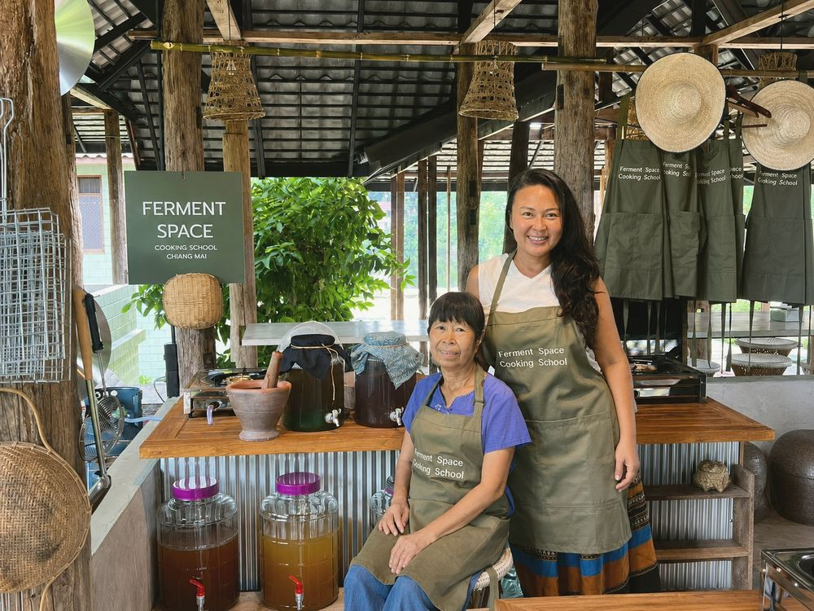

From My Grandmother's Kitchen to Your DTV Visa

The question I hear in the kitchen
The smell of toasted chili and lemongrass usually hits people first. Then, somewhere between pounding the curry paste and tasting the broth, someone puts down their pestle and asks me quietly: "Can this actually get me a visa?"
I understand why they ask. Most people who find us are not only looking for a cooking class. They are looking for a way to stay in Thailand longer, to slow down, and to build a life here without feeling like a tourist on a countdown.
My family has cooked Lanna food for three generations. My grandmother cooked it for survival and celebration. My mother, our Head Instructor, cooked it for our family and now teaches it to people from all over the world. I built Ferment Space so that this heritage could become something people live with, not just watch for an afternoon.
So, can a cooking school get you a DTV visa?
Yes, Thai cooking is one of the soft power activities that can support a Destination Thailand Visa (DTV) application. But the class alone is not the visa. The embassy or consulate makes the decision, and they look at your whole application: your enrollment, your finances, and the school behind your paperwork.
That last part matters more than most people realise. A letter from a school the embassy cannot verify can slow down or sink an application. A letter from a properly registered, licensed school with qualified instructors gives the officer what they need to say yes.
One honest note: visa rules, fees and financial requirements change. We always tell students to check the official Thai e-Visa website for the current requirements in their country before applying, and we update our own guidance as embassies change theirs.
What embassies look for in a school
When we started supporting DTV students, we learned quickly that embassies ask real questions. Some wanted proof the school was a registered business. Others asked about the instructor's qualifications. So we built our paperwork to answer those questions before they are asked.
Before you enroll anywhere, check that the school can show you:
- A registered Thai company whose official objectives include cooking instruction. Ferment Space Cooking Co., Ltd. is registered with cooking instruction in Thai food, Lanna food and desserts listed in its objectives.
- A Tourism Business License. Ours is No. 23/04049 (previously 23/04038).
- Qualified instructors with certificates. Our team's credentials include the DIPROM Master Thai Chef Program, a Thai Street Food course from Chiang Mai Polytechnic College, HarvardX Food Fermentation, and current food hygiene training.
- A real, structured program, not a single class stretched into a letter.
- Complete documents: an enrollment agreement, a letter of acceptance, official receipts, and support if the embassy asks follow-up questions.
If a school cannot show you these, ask why. It is your visa on the line.
What a year with us looks like
Our 12-month DTV program includes 98 hours of classes for ฿60,000, including DTV visa support. If you prefer a shorter path, our 9-month program includes 68 hours for ฿55,000. That rhythm leaves you time to explore Chiang Mai, work remotely, or simply rest, while giving you a real reason to be here. You can see both options on our program and pricing section.
The curriculum follows a 12-month Lanna Thai calendar. You cook with the seasons: the herbs of the rainy months, the preserved and fermented foods of the cool season, the dishes families make for festivals. By the end, you do not just follow recipes. You understand why Northern Thai food tastes the way it does. You can browse the month-by-month curriculum here.
On class days, you can also use our wellness area: the Finnish sauna, ice bath, red light therapy and pool. Some students stay in one of our three co-living rooms on site, so the kitchen is a few steps from bed.
More than a visa
The visa is often why people first message us. But it is rarely what they talk about months later. They talk about the first time their khao soi tasted right. About my mother correcting their grip on the pestle, again, with a smile. About neighbours becoming friends over a shared table in Hang Dong.
That is what soft power really means to us. Not a checkbox on a form, but culture passed from one pair of hands to another.
If you are thinking about a longer life in Thailand, come and cook with us. Message us with your questions about the DTV program, and we will tell you honestly whether it fits your plans. The kitchen is warm, and there is always room for one more at the table.
Ready to cook with us?
See the programs, ask a question, or join our free DTV community group.
See programs & pricing